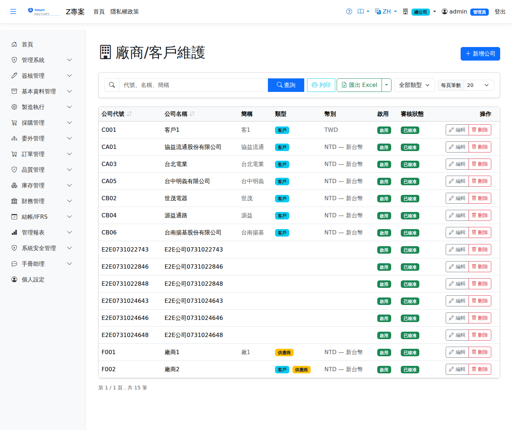
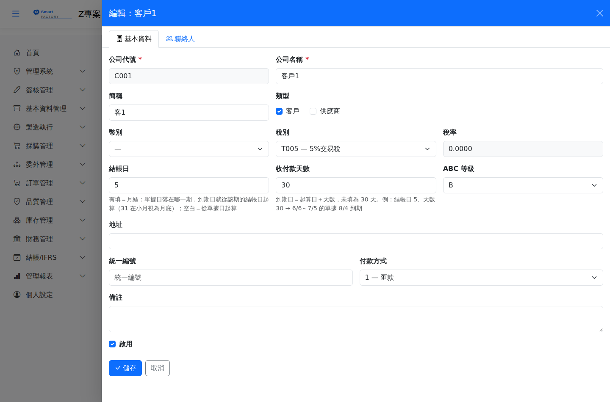

公司/廠商主檔Company / Vendor Master
公司/廠商主檔維護所有往來廠商與客戶的基本資料。同一筆記錄可同時標記為「客戶」與「廠商」。新增廠商需通過簽核流程，核准後方可在採購模組中使用。The company master holds the basic data of every supplier and customer. One record can be flagged as both customer and supplier. New suppliers go through an approval flow and can only be used in purchasing once approved.

欄位說明Field reference

| 欄位名稱Field | 必填Required | 說明Guide |
|---|---|---|
| 公司代碼Company Code | 必填Required | 唯一識別碼，建立後不可變更（例：SUP001）Unique code; cannot be changed once created (e.g. SUP001) |
| 公司名稱Company Name | 必填Required | 廠商或客戶的完整名稱Full name of the supplier or customer |
| 是否客戶Is Customer | 勾選後可在銷售訂單中選用Once checked, can be selected on sales orders | |
| 是否廠商Is Supplier | 勾選後可在採購單中選用Once checked, can be selected on purchase orders | |
| 稅率Tax Rate | 預設適用稅率（%），可被採購/銷售單個別覆蓋Default tax rate (%); can be overridden on individual purchase and sales documents | |
| 結帳日Closing Day | 每月第幾日結帳（1–31，31 在小月視為月底）。有填＝月結：單據日落在哪一期，到期日就從該期的結帳日起算；空白＝從單據日起算Day of the month the account closes (1–31; 31 means month end in short months). If set, billing is monthly: the due date counts from the closing day of the period the document falls in. Blank = counts from the document date | |
| 收付款天數Credit Days | 到期日＝起算日＋天數，未填為 30 天。系統由出貨／收料自動產生應收／應付發票時依此計算到期日。例：結帳日 5、天數 30 → 6/6～7/5 的單據在 7/5 結帳、8/4 到期Due date = start date + these days (30 if blank). Used when shipments and receipts automatically create AR/AP invoices. E.g. closing day 5, 30 days → documents dated 6/6–7/5 close on 7/5 and are due 8/4 | |
| 供應商認證狀態Supplier qualification status | 未認證 / 認證中 / 已認證，供採購稽核用Not Qualified / In Qualification / Qualified, used for purchasing audits | |
| 是否啟用Active | 停用後仍保留歷史資料，但無法在新單據中選取History is retained, but it cannot be selected on new documents |
聯絡人管理Contact management
編輯公司後，點擊側欄下方「聯絡人」分頁可新增/刪除聯絡人。每筆聯絡人包含姓名、職稱、電話、Email 等資訊。After opening a company, click the "Contacts" tab at the bottom of the panel to add or remove contacts. Each contact holds name, title, phone, e-mail and so on.
簽核流程Approval flow
若系統管理者已啟用「公司/廠商」簽核範本，則新增或修改後需送審。送審前單據狀態為「草稿」，核准後才可正常使用。If the administrator has enabled the approval template for "Company / Vendor", new or changed records must be submitted. The status stays "Draft" until approval, after which the record can be used normally.
操作步驟Steps
新增廠商Adding a supplier
查詢廠商Searching suppliers
停用廠商Deactivating a supplier
編輯廠商，取消勾選「是否啟用」後儲存。停用後不影響已存在的歷史單據，但新單據無法選取該廠商。Open the supplier, uncheck "Active" and save. Existing documents are unaffected, but the supplier can no longer be selected on new ones.
匯出Export
查詢結果頁面點「匯出」可下載 Excel（.xlsx）格式，包含目前查詢條件篩選後的所有記錄。On the results page click "Export" to download an Excel (.xlsx) file containing every record matching the current query.